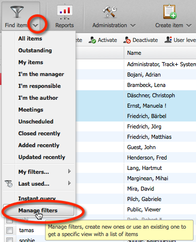
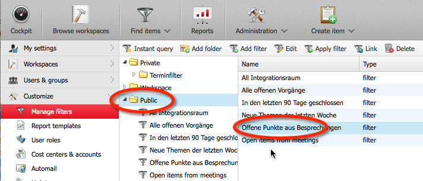

Link to this page
Print this page
Parent topic
:
Finding items
Track+ for team members
/
Finding items
Adding a filter to your menu
Select menu
Find items
>
Manage filters
.

Select a filter by clicking on a folder and then double clicking on a filter in the right area.

Check the „Subscribe“ check box to add this filter as a shortcut to your view menu under „Find items“.
Save the filter.